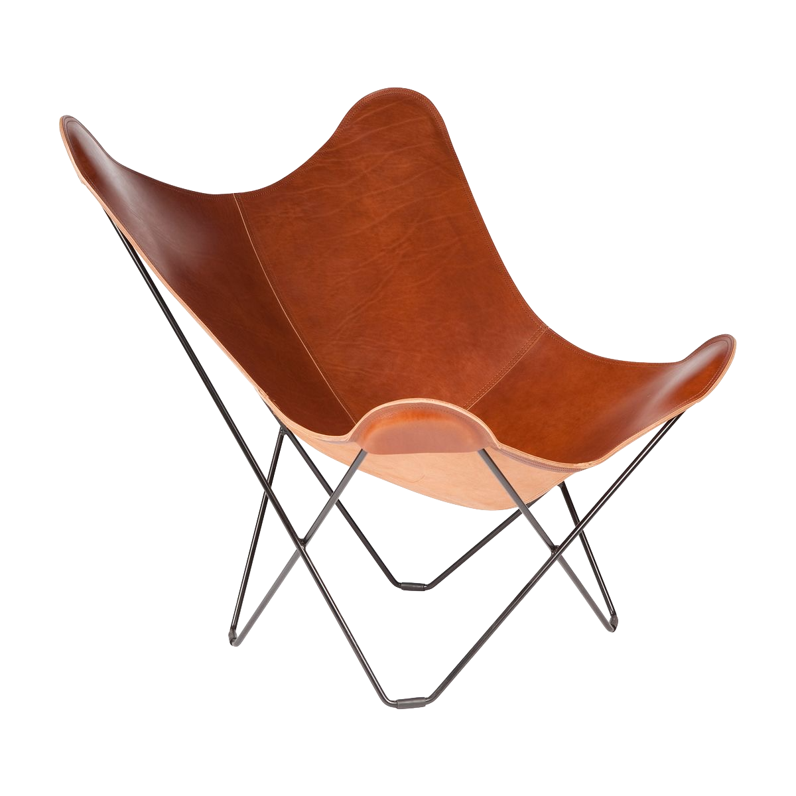
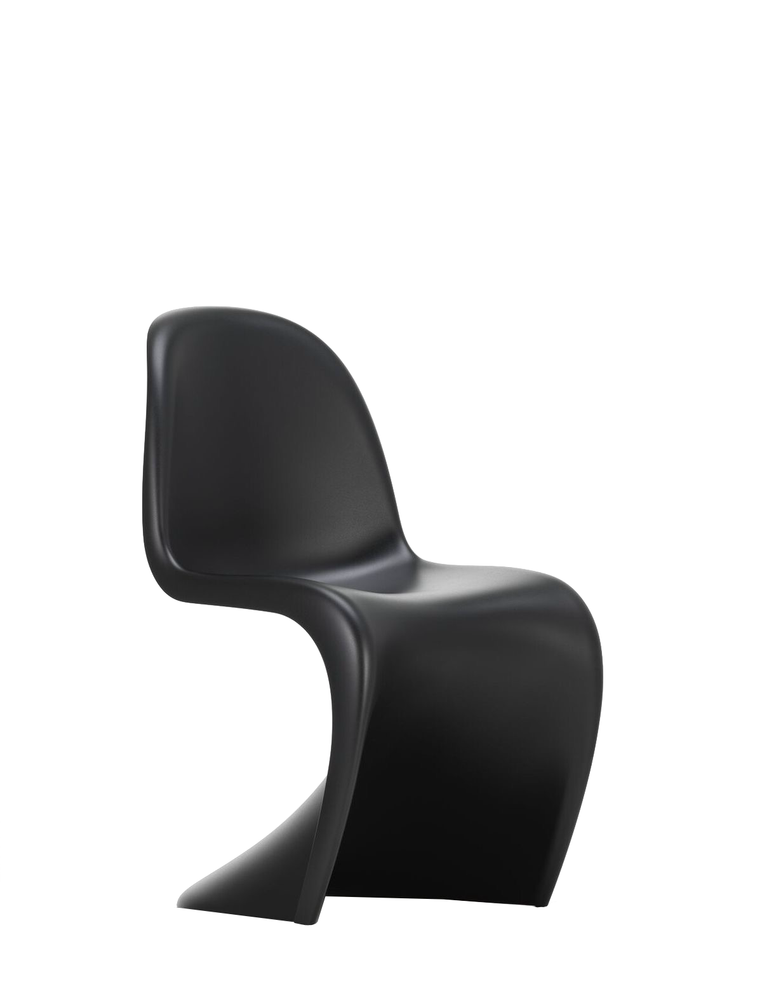
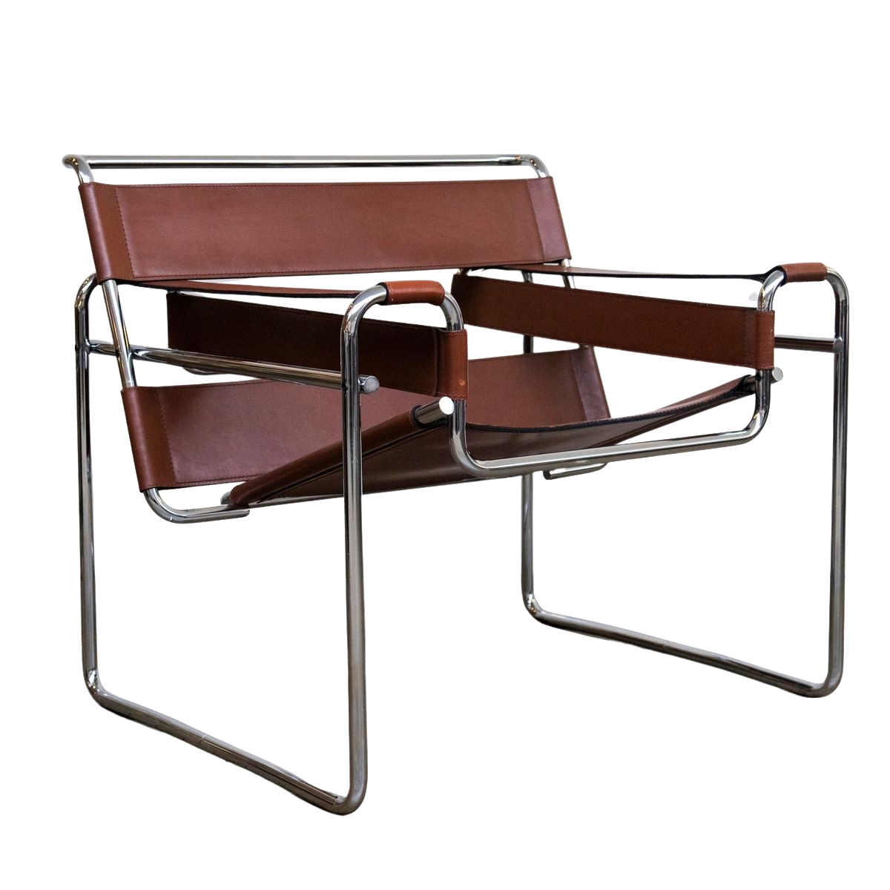

1938
italian leather, premium hemp canvas and Icelandic sheepskin.
more information
Butterfly Chair

1967
italian leather, premium hemp canvas and Icelandic sheepskin.
more information
Panton Chair

1926
italian leather, premium hemp canvas and Icelandic sheepskin.
more information
Wassily Chair